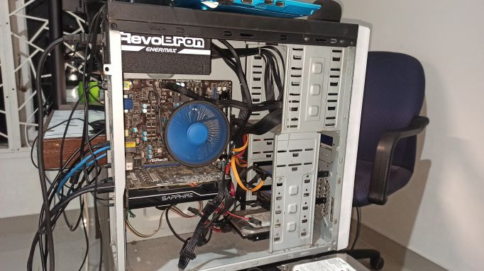

C.P.U (Central Processing Unit)
CPU ini digunakan untuk keperluan sehari-hari seperti nugas, nonton, ngegame, ngedit, dan "nge" lainnya. CPU ini merupakan CPU Rakitan.
Spesifikasi CPU ini adalah sebagai berikut:
- Prosesor Intel Xeon E3-1230 v2
- Motherboard Asrock H67M
- RAM Corsari 16 GB (2 keping)
- VGA Sapphire RX570
- PSU Enermax RevoBron Semi Modular
- SSD 500 GB Team
- HDD 80 GB Seagate
Spesifikasi diatas sudah memenuhi kebutuhan saya. Walaupun sekarang ini prosesor terbaru sudah keluar dari Intel dan AMD, namun aktifitas yang saya lakukan di depan komputer tidak membutuhkan komputasi sebesar itu, kecuali kalau ngoding android..